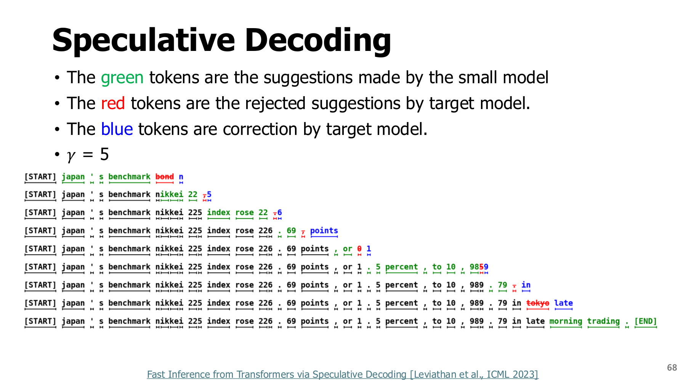
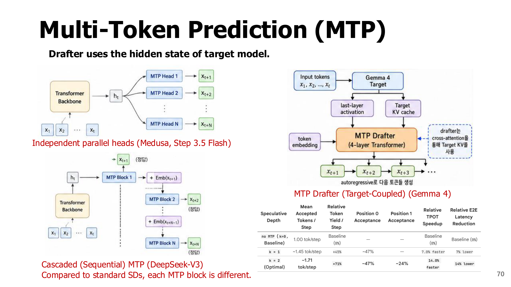
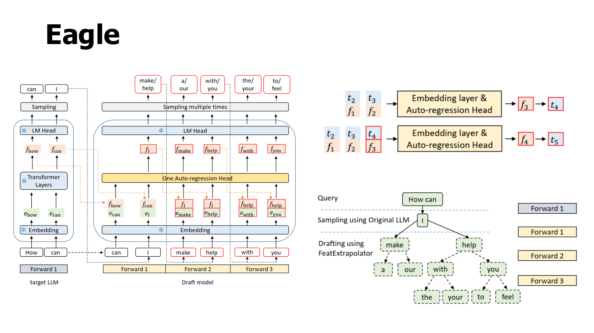
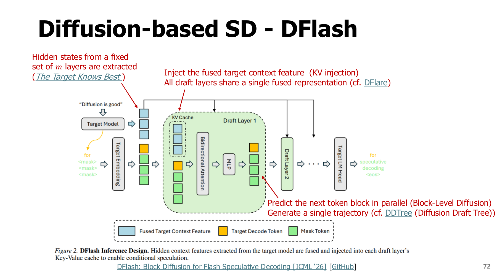
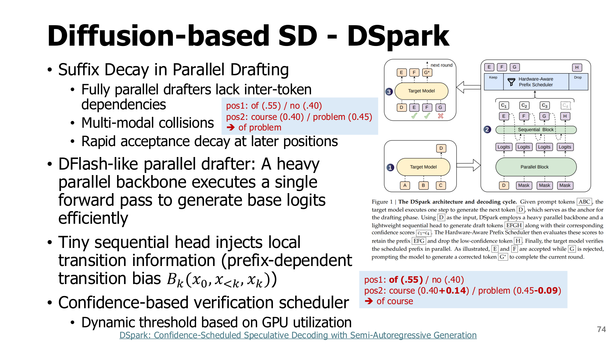

6. 투기적 디코딩: 초안은 빠르게, 확정은 큰 모델로
학습 안내 · 이전 · 다음: 실행 최적화
원본 범위: p.67-75
학습 목표
- 초안 → 검증 → 수용·보정 순서 설명하기
- 수용확률과 작은 성능 예제 계산하기
- 초안이 길거나 수용률이 높아도 느릴 수 있는 이유 설명하기
시작 전 준비
| 용어 | 뜻 |
|---|---|
| Autoregressive(자기회귀) 생성 | 이미 나온 토큰을 바탕으로 다음 토큰을 이어 만드는 방식 |
| Prefix | 지금까지 확정한 입력·출력의 앞부분 |
| 조건부 확률 | 주어진 prefix에서 다음 후보가 나올 확률 |
| Sampling | 확률에 따라 후보를 뽑는 것 |
| Greedy 생성 | 매번 가장 높은 점수의 토큰을 고르는 것 |
| Forward(순전파) | 입력을 모델에 넣어 출력을 계산하는 한 번의 실행 |
왜 병렬 생성이 어려울까? 두 번째 토큰의 확률은 첫 번째로 무엇이 나왔는지에 따라 달라진다. 목표 모델이 토큰 하나씩 결정하면 순서대로 기다리는 과정이 생긴다.
6.1 작은 모델이 정답을 대신 결정하는가? - p.67
투기적 디코딩(Speculative Decoding, SD)은 빠른 모델로 여러 후보를 미리 만든 뒤 목표 모델로 검증하는 방법이다.
| 역할 | 하는 일 |
|---|---|
| 초안 모델(draft) | 낮은 비용으로 후보 토큰 제안 |
| 목표 모델(target) | 최종 기준이 되는 확률 계산과 검증 |
순차 호출(Sequential Calls)이 비싼 이유: 일반적인 자기회귀 생성에서는 앞 토큰을 정해야 다음 토큰을 계산할 수 있어 큰 목표 모델을 반복 호출한다. 작은 배치의 디코드에서는 매번 큰 가중치를 메모리에서 읽는 비용이 병목이 되기 쉽다. 교안의 메모리 제약(Memory Limits)은 이 문맥에서 용량뿐 아니라 메모리 대역폭·이동 비용과 구분해 이해해야 한다.
투기적 디코딩은 큰 모델이 가중치를 읽는 비용을 여러 확정 토큰에 나눌 기회를 만든다. 목표 모델 자체를 작게 만드는 방법은 아니므로, 목표 모델·초안 모델·두 모델의 캐시가 차지하는 메모리 용량은 별도로 확보해야 한다. 실제 이득은 초안·검증의 추가 비용에 달려 있다.
이 장의 기호
- q: 초안 모델의 다음 토큰 확률분포
- p: 목표 모델의 다음 토큰 확률분포
- $\gamma$: 한 라운드의 초안 길이
- 원문의 $M_q,M_p$: 각각 초안 모델과 목표 모델
두 모델의 호출을 나누어 읽기 — p.67
| 단계 | 초안 모델 Mq | 목표 모델 Mp |
|---|---|---|
| 후보 생성 | 기본형에서는 앞 후보를 입력에 이어 넣으며 γ번 순차 생성 | 후보 생성 결과를 기다림 |
| 후보 검증 | 각 후보를 제안한 확률 q도 제공 | 주어진 후보열의 여러 위치에서 확률 p를 한 번의 인과적 순전파로 계산 |
| 확정 | 후보를 제안했어도 확정 권한은 없음 | 앞에서부터 수용 여부를 판정하고 거절 시 보정 |
γ(감마)는 한 라운드에서 제안할 토큰 개수다. 예를 들어 γ=3이면 초안은 A → B → C를 순서대로 만든다. 교안의 “Mq가 γ번 순차 호출된다(Called Sequentially γ Times)”와 “Mp가 병렬로 평가한다(Evaluate in Parallel)”는 서로 다른 모델의 서로 다른 단계이므로 모순이 아니다. 뒤의 병렬 초안 기법과도 구분한다.
기본 절차
- 초안 모델이 현재 확정 prefix에서 $\gamma$개 후보를 만든다. 기본형에서는 초안 생성 자체가 순차적이다.
- 목표 모델이 후보열을 한 번의 causal forward에 넣어 각 위치의 확률을 평가한다. 후보 prefix가 주어져 있으므로 검증용 여러 위치의 계산을 병렬화할 수 있다.
- 왼쪽부터 조건을 검사하여 연속으로 수용한다. 첫 거절 지점 이후의 초안은 그대로 확정하지 않는다.
- 거절 위치는 보정 분포에서 token을 뽑고, 전부 수용했다면 목표 모델에서 추가 token 하나를 뽑는다.
- 확정 prefix와 KV 상태를 맞추고 반복한다. 거절된 초안에 해당하는 cache를 잘못 남기면 다음 확률도 달라진다.
왜 검증은 여러 위치를 함께 계산할 수 있을까?
초안이 A → B → C를 이미 제안했다면 목표 모델은 다음을 한 forward에서 평가할 수 있다.
| 평가 위치 | 목표 모델에 주어진 앞부분 |
|---|---|
| A의 확률 | 원래 prefix |
| B의 확률 | 원래 prefix + A |
| C의 확률 | 원래 prefix + A + B |
모든 후보 prefix가 알려져 있어 causal mask를 적용한 여러 위치의 계산을 함께 수행한다. 다만 A가 거절되면 A 뒤에 조건부인 B·C도 그대로 확정할 수 없다. 따라서 “Mq의 추측과 확률을 평가한다”는 말은 Mp가 q를 그대로 정답 확률로 받아들인다는 뜻이 아니다. Mp는 각 후보 문맥에서 자신의 p를 계산하고, 샘플링 방식에서는 그 p와 Mq의 q를 비교해 수용·보정한다. 이 차이를 다음 절의 분포 보존 예제에서 확인한다.
비용 주의: 호출 한 번이 후보 길이에 무관한 고정 비용은 아니다. 큰 batch로 장치를 이미 잘 사용하는 상황에서는 검증 계산이 부담이 될 수 있다.
6.2 분포 보존은 어떤 조건에서 가능한가?
먼저 구분할 것
| 생성 방식 | 기본 검증 관점 |
|---|---|
| Greedy | 목표 모델의 최고 점수 토큰과 일치하는지 확인 |
| Sampling | 초안·목표의 확률비와 거절 후 보정까지 고려 |
다음은 원 논문의 exact speculative sampling을 풀어 쓴 교육용 전개다. 같은 tokenizer·토큰 공간, 같은 prefix, 일관된 sampling 변환을 전제로 한다.
초안에서 제안된 token $x\sim q$에 대해 수용확률은
수용·보정의 조건
- 초안이 제안한 토큰은 $q(x)>0$이다.
- $p(x)\ge q(x)$면 수용확률은 1이다.
- $p(x)<q(x)$면 $p(x)/q(x)$의 확률로 수용한다.
- 거절되면 $r(x)\propto\max(0,p(x)-q(x))$를 합이 1이 되도록 정규화해 보정 토큰을 뽑는다.
두 분포가 같아 거절확률이 0인 경우에는 보정 분포를 만들 필요가 없다.
교육용 계산: token A·B에 대해 $p=[0.6,0.4]$, $q=[0.8,0.2]$라 하자.
| 단계 | A | B |
|---|---|---|
| 초안 제안 확률 q | 0.8 | 0.2 |
| 수용확률 $\min(1,p/q)$ | 0.75 | 1 |
| 직접 수용되는 확률 질량 | $0.8\times0.75=0.6$ | $0.2\times1=0.2$ |
| 양의 잔차 $\max(0,p-q)$ | 0 | 0.2 |
계산 결과
- 직접 수용: A 0.6, B 0.2.
- 거절확률: 0.2. 양의 잔차는 B에만 있으므로 거절 시 B로 보정.
- 최종 분포: A 0.6, B $0.2+0.2=0.4$.
목표 분포 p와 같다. Sampling에서는 top-1 일치 여부만으로 이 결과를 얻을 수 없다.
주의: 분포 보존은 알고리즘과 sampling 변환이 일관되게 구현되었을 때의 성질이다. 같은 난수 seed에서 token열이 항상 동일하다는 뜻도 아니며, 임의 top-k 후보 절단·근사 검증·cache 처리까지 자동으로 정확해지는 것도 아니다.
6.3 후보 5개를 어디까지 확정하는가? - p.68-69


그림의 색과 역할
| 색 | 의미 |
|---|---|
| 녹색 | 초안 모델의 제안 |
| 빨간색 | 거절된 제안 |
| 파란색 | 목표 모델이 보정·추가한 토큰 |
초안 5개 중 어디까지 확정할까?
| 검증 결과 | 확정하는 토큰 | 사용하지 않는 초안 |
|---|---|---|
| 앞 3개 수용, 4번째 거절 | 앞 3개 + 보정 1개 = 4개 | 4·5번째 |
| 5개 모두 수용 | 초안 5개 + 목표 추가 1개 = 6개 | 없음 |
색보다 연속 수용한 앞부분 → 첫 거절 → 보정 순서를 따라 읽는다. 거절 이후의 제안은 확정된 앞부분이 바뀌었으므로 그대로 내보내지 않는다.
교육용 성능 모형: 각 위치의 조건부 수용률이 같은 상수 $a$라고 단순화하면 한 라운드에서 기대 확정 token 수는
기대 길이 식 읽기
- 첫 번째 1: 거절 시 보정 토큰 또는 전부 수용 시 추가 토큰.
- $a^i$: 첫 i개가 모두 연속 수용될 확률을 일정 조건부 수용률 a로 단순화한 값.
- $a=1$: 모두 수용하므로 $\gamma+1$개 확정.
실제 수용률은 위치와 문맥에 따라 다르다. 위 식은 일정 수용률을 가정한 설명용 모형이다.
교육용 성능 계산
조건: $a=0.8$, 초안 4개, 목표 단독 생성 10 ms/token, 초안 1 ms/token, 검증 전체 12 ms.
| 항목 | 계산 | 결과 |
|---|---|---|
| 기대 확정 길이 | $1+0.8+0.64+0.512+0.4096$ | 3.3616 token |
| 라운드 시간 | $4\times1+12$ | 16 ms |
| 평균 시간/token | $16/3.3616$ | 약 4.7596 ms |
| 기준 대비 가속률 | $10/4.7596$ | 약 2.101배 |
조건을 바꾸면? 검증 시간이 40 ms면 라운드는 44 ms, 시간/token은 약 13.09 ms다. 기준 10 ms보다 느려진다.
기타 overhead를 제외한 계산이다. 원문 p.69의 최대 3.4배는 해당 모델·작업·온도의 실험값이며 위 예제와 별개다.
이후 방법들의 공통 질문
초안 작성 비용은 낮추면서, 목표 모델이 연속으로 받아들일 후보를 만들 수 있을까?
| 계열 | 초안 작성의 핵심 |
|---|---|
| MTP | 여러 미래 위치를 예측하도록 학습·구조 설계 |
| EAGLE | 목표 모델의 특징과 토큰 정보를 활용 |
| DFlash | 목표 특징을 조건으로 후보 블록을 병렬 예측 |
| DSpark | 병렬 초안에 작은 순차 모듈을 더하고 검증 길이 조절 |
처음 읽을 때는 이름보다 초안 입력·생성 순서·검증 비용의 차이에 집중한다.
6.4 MTP와 EAGLE: 목표 모델 정보를 초안에 활용 - p.70-71
Multi-Token Prediction(MTP)은 미래 여러 위치를 예측하는 학습·구조의 계열이다. 원문 p.70은 서로 다른 구조를 함께 놓는다.


| 구조 | 다음 위치 예측 사이 관계 | 주의 |
|---|---|---|
| 독립 병렬 head | 같은 기반 표현에서 여러 미래 위치 예측 | 서로 양립하지 않는 후보 조합 가능 |
| 연쇄·cascaded MTP | 앞 단계의 표현·token 정보를 뒤 단계로 전달 | 순차 의존 비용이 일부 남음 |
| 목표 모델 결합 drafter | 목표 hidden state 등을 이용 | 목표 모델 내부 정보에 접근·연동 필요 |
그림 속 모델명은 원문의 사례다. MTP가 있다는 사실만으로 exact SD 검증을 수행하거나 현재 runtime에서 자동 가속된다고 판단하지 않는다.
EAGLE은 목표 모델의 중간 특징과 token 정보를 활용해 초안을 만드는 계열이다. p.71은 텍스트 추출이 거의 불가능한 구조 그림이므로 그림으로 경로를 확인했다. 원문의 도식은 기본 특징 예측과 후속 변형을 함께 보여주므로 모든 EAGLE 버전을 동일 구조라고 쓰지 않는다.


위 그림에서는 token 입력과 hidden feature가 결합되어 다음 초안으로 전달되는 경로를 본다. 구조도만으로 학습 hyperparameter나 정확한 배포 설정을 복원할 수는 없다. 이 자료는 모델별 구현 예제가 아니라 입력·출력·검증의 역할을 설명한다.
6.5 DFlash: 초안 block을 병렬로 - p.72-73
DFlash의 문제 설정
- 기본 SD: 초안도 하나씩 만들면 초안 지연이 쌓인다.
- DFlash: 가벼운 block diffusion 모델로 여러 후보를 병렬 예측한다.
- 조건 정보: 목표 모델의 여러 층에서 추출·융합한 문맥 특징.
Diffusion 용어 주의: 여기서는 미완성인 토큰 블록을 문맥에 맞는 후보로 예측하는 초안 구조에 초점을 둔다. 일반적인 영상 생성 diffusion의 반복 횟수를 이 도식에 그대로 적용하지 않는다.


그림은 왼쪽의 목표 feature 추출 → 중간의 융합·주입 → 오른쪽 block 후보의 병렬 예측 순서로 읽는다. diffusion 초안이 있다는 것이 목표 모델의 autoregressive 생성 분포를 임의로 바꾼다는 뜻은 아니다. 목표 검증을 어떻게 수행하는지까지 포함해서 봐야 한다. 일반적인 diffusion 생성의 여러 denoising step 수를 이 그림만으로 그대로 적용하지도 않는다.
p.72의 DFlare·DDTree 주석은 feature 조건화·단일 경로와 트리 확장에 관한 추가 비교다. 이 자료에서는 이름만으로 별도의 구현·학습 성능을 재현했다고 주장하지 않는다. p.73 막대그래프의 속도와 평균 수용 길이는 원문 benchmark 결과이며 대상 모델·baseline·장치에 묶인 값이다. DFlash 논문으로 block 병렬 초안과 목표 특징 조건화를 대조했다(2026-11-10).
6.6 DSpark: 병렬 초안 뒤쪽의 불일치를 줄이기 - p.74-75
DSpark가 다루는 문제: 후보 사이의 연결 부족
원문은 자연스러운 두 조합 of course, no problem을 예로 든다.
| 병렬 예측 위치 | 가장 높은 후보 |
|---|---|
| 첫째 위치 | of |
| 둘째 위치 | problem |
| 독립 선택의 조합 | of problem |
각 위치에서 따로 좋은 후보를 고르는 것만으로 자연스러운 조합이 보장되지 않는다. 뒤 위치에서 연속 수용률이 낮아지는 현상을 suffix decay와 연결해 설명한다.


DSpark의 두 대응
| 구성 | 역할 |
|---|---|
| 병렬 backbone + 작은 순차 모듈 | 기본 점수는 한 번에 만들고 앞 토큰에 따른 전이 정보를 보완 |
| Confidence 기반 검증 스케줄 | 연속 수용 가능성과 시스템 부하를 고려해 검증 길이 조절 |
Backbone은 주된 계산을 담당하는 신경망 부분이다. 긴 초안을 모두 검증하면 버릴 가능성이 큰 후보도 처리 용량을 사용한다. 핵심 역할은 DSpark 원 논문과 대조했다(2026-11-10).
정정·주의: p.74의 0.40+0.14, 0.45-0.09는 설명용 변화다. 실제 transition bias를 확률값에 임의로 더하면 합이 1이 아닐 수 있다. 보통 logits 조정과 정규화 등 정확한 모델 정의가 필요하다. 원문만으로 이 수치를 정식 확률 알고리즘으로 재현하지 않는다. p.75의 위치별 수용률 곡선은 뒤 위치의 감소 경향을 비교하며, 모든 위치·작업에서 같은 순위를 보장하지 않는다.
6.7 요약과 확인 질문
SD는 초안 시간, 검증 시간, 확정 길이를 함께 최적화한다. 초안 방식은 독립 모델·MTP·특징 예측·병렬 block·혼합 구조로 달라질 수 있지만, 확정의 정확성과 실제 장치 비용을 별도로 점검해야 한다.
- 후보 5개 중 첫 2개만 수용하고 3번째를 거절했다. 기본 절차에서 몇 token을 확정하는가?
- $p(A)=0.3,q(A)=0.6$일 때 A 제안의 수용확률은?
- $a=1,\gamma=4$이면 기대 확정 길이는? 초안·검증 비용이 커도 무조건 가속되는가?
- 병렬 초안이 긴데 왜 검증 길이를 일부 줄이는 선택이 유리할 수 있는가?
해설과 돌아갈 위치
- 앞 2개+보정 1개로 3개다. 뒤 초안은 확정하지 않는다. 6.1·6.3을 확인한다.
- $\min(1,0.3/0.6)=0.5$다. 거절 후 잔차 분포 보정까지 있어야 전체 분포를 보존한다. 6.2로 돌아간다.
- 5개지만 무조건 빠르지 않다. 라운드 시간/5가 기준 시간/token보다 작아야 한다. 6.3을 확인한다.
- 뒤 후보의 생존확률이 낮으면 거의 버릴 계산에 batch 용량을 쓸 수 있다. confidence·실제 처리량 조건을 함께 보아야 한다. 6.6으로 돌아간다.